Víctor Calderón
Development Director
Jennifer Becerra
Development Specialist
Graciela Soto
Development Specialist
Axel Torres
Development Specialist
José Macedo
Infrastructure Manager
Juan Pablo Galicia
IT Manager Mexico
René de Lima
Help Desk Manager MX
Erick Muñoz
Support Specialist
Angélica Soto
Quality Manager Mexico
Galileo Ramírez
POS Director LATAM
Roberto Soledad
POS Product Manager
Liliana Ramírez
Help Desk Manager RD
David Calvario
Hospitality Director
Miguel Muñoz
Hospitality Product Mgr
Uriel Hernández
Development Specialist
Francisco Morales
Database Manager